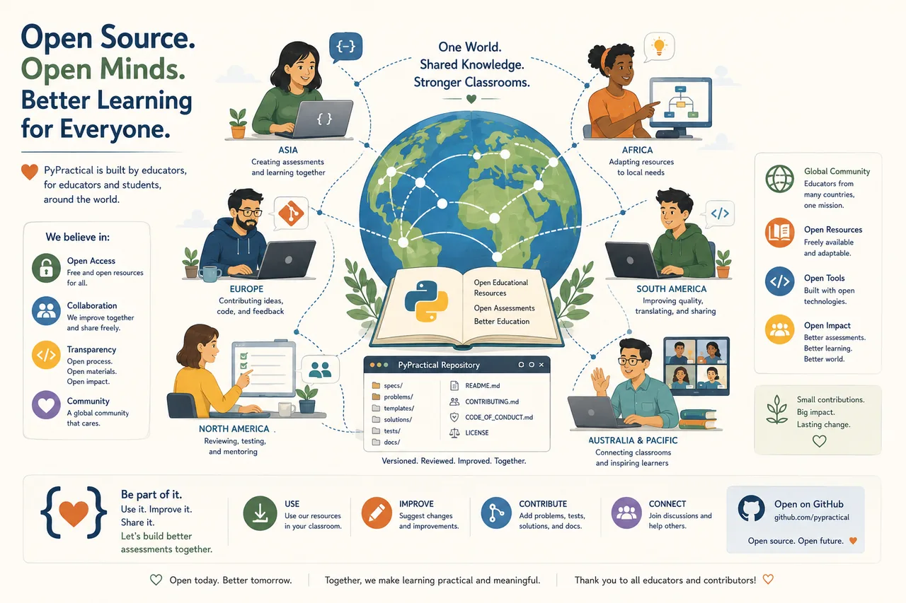

AI as a teaching partner
AI can generate code; teachers provide wisdom. PyPractical embraces both — AI helps create, organize, and improve resources, never replacing thoughtful teaching.
PyPractical began with a simple conversation between a teacher and an AI. It is intended to become the work of many educators who believe teaching resources improve through collaboration.

AI can generate code; teachers provide wisdom. PyPractical embraces both — AI helps create, organize, and improve resources, never replacing thoughtful teaching.
Assessments improve, stories evolve, tests grow stronger. Growth isn't a sign the original work was incomplete — it's the point.
The philosophy — authentic assessment, clear progression, objective grading, respect for students — applies regardless of language.
Not by the number of assessments in the repository, but by a teacher who saves hours and a student who discovers they enjoy programming.
“Growth is not a sign that the original work was incomplete. Growth is the purpose.”— Project Vision
Rendered live from the repository — so the site and the source always agree.
Education grows stronger when teachers share. Improve an assessment — and consider sharing it back.